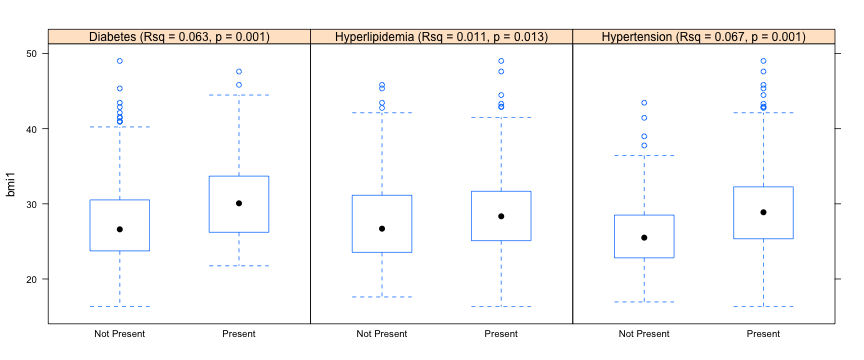

- The body mass index (BMI) is a simple function of height and weight
- It has been widely used to quantify obesity
- There are many studies showing a relationship of BMI with various health outcomes including
- Diabetes
- Hypertension
- Heart Disease
- Cancer
Association of Body Mass Index (BMI) with common cardiovascular risk factor in a racially/ethnically diverse sample from a longitudinal study of cognitive aging. Participants are 60+ years of age. Results show significant associations of BMI with all three diagnoses. While these associations are relatively weak, they correspond to large population effects.

\[\frac{weight_{kilograms}}{height_{meters}^2}\]
\[\frac{weight_{pounds} x 703}{height_{inches}^2}\]
This program can be accessed at: https://dmungas.shinyapps.io/BMI_Calc
To calculate the BMI associated with a specific height and weight: 1) select units of measurement for height and weight (English versus Metric), 2) enter height (in appropriate units) in dropdown menu, and 3) enter weight (in appropriate units) in dropdown menu. The calculated BMI value will be displayed.